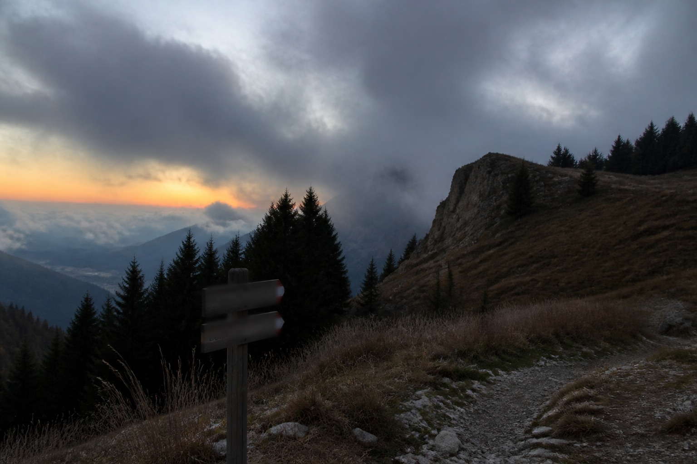

My thinking spot

Heavy week. Not "lots of meetings" heavy. The other kind.
When my head gets too loud I go up the mountain. Always the same spot. I've been going there for years and I've never once seen anyone else sitting on my rock, which I choose to interpret as respect.
There's no signal up there. No notifications, no Slack, no little red dots. Just wind and the occasional confused bird. It's the only place where I can actually finish a thought.
I'll be up there again soon. Probably sooner than I planned.
Some decisions are easier above 1,800 metres.